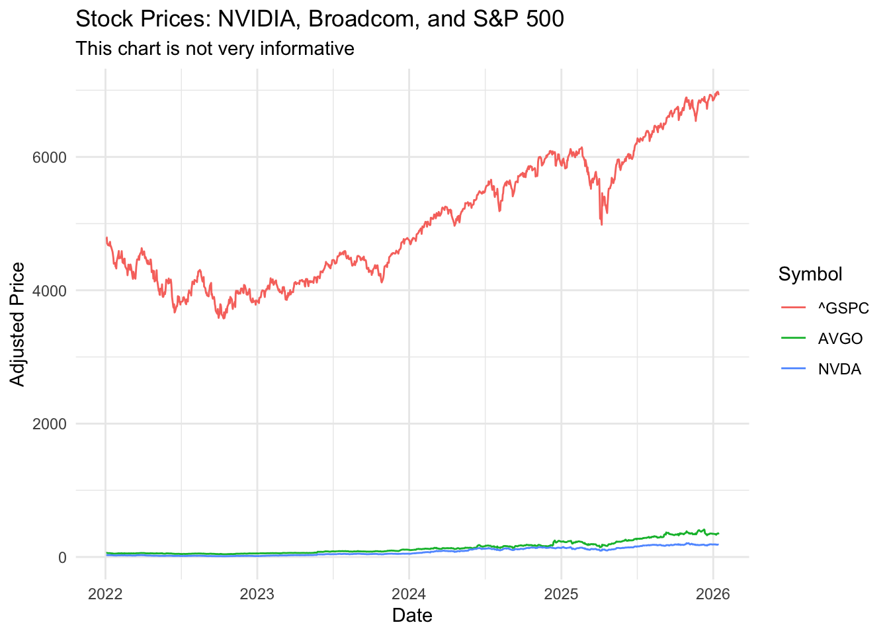
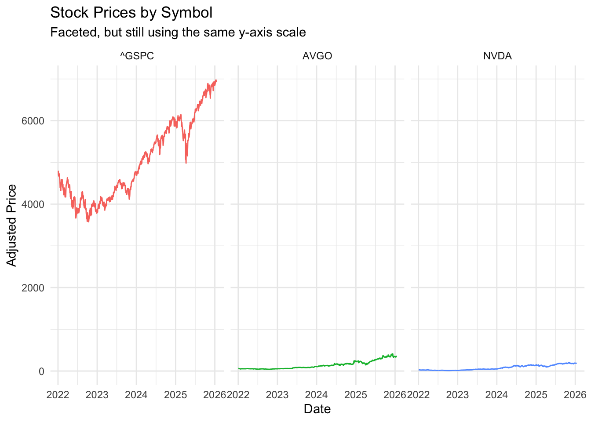
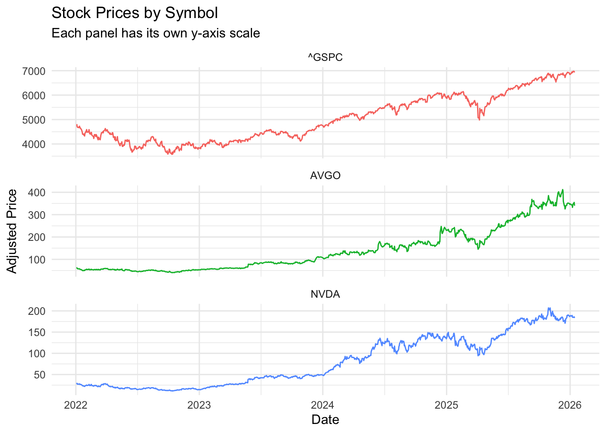
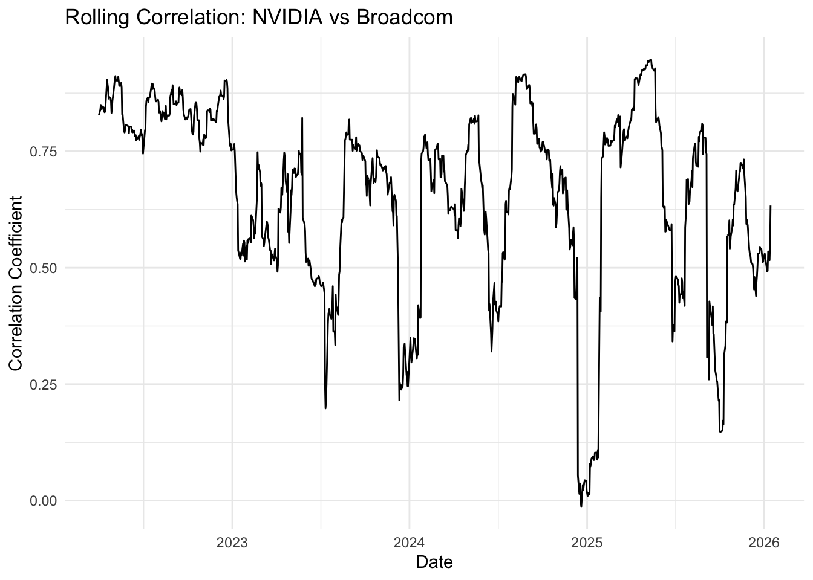
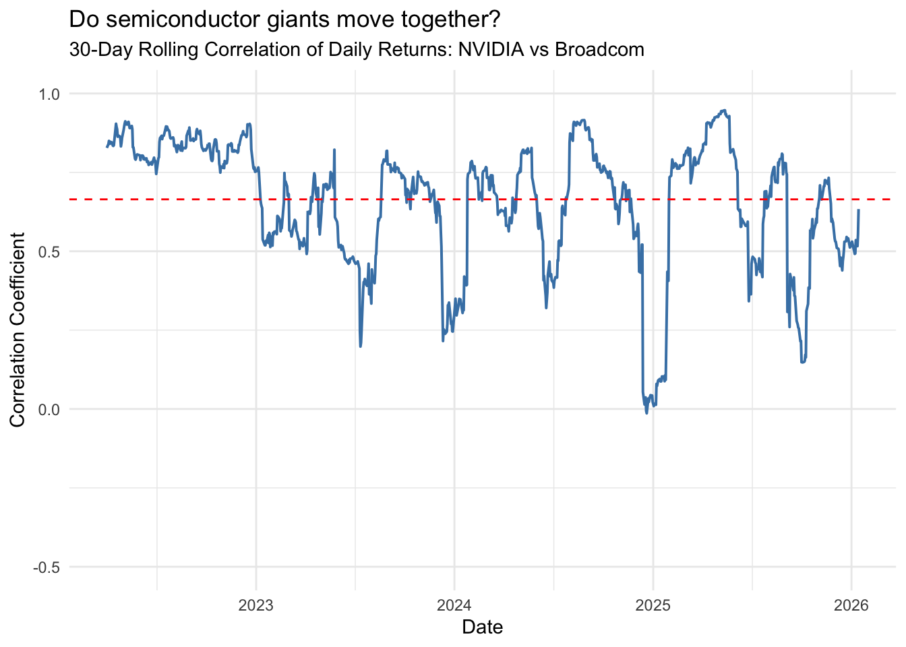
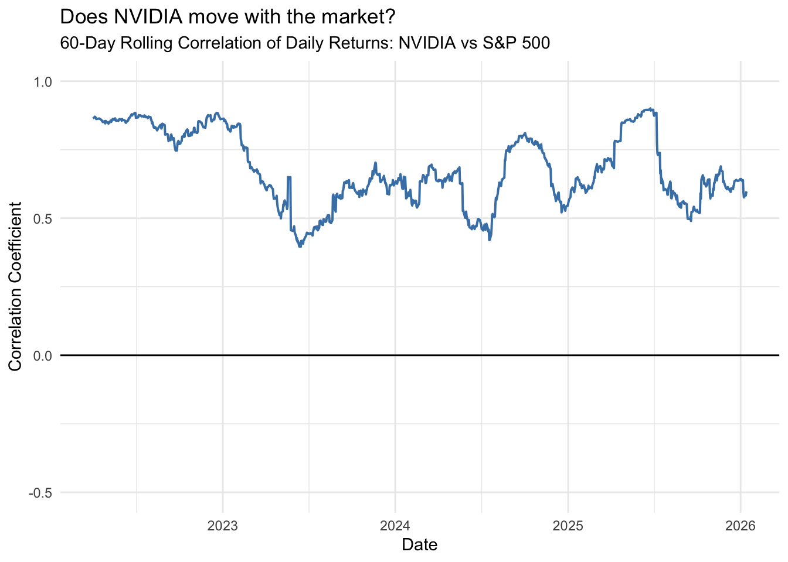
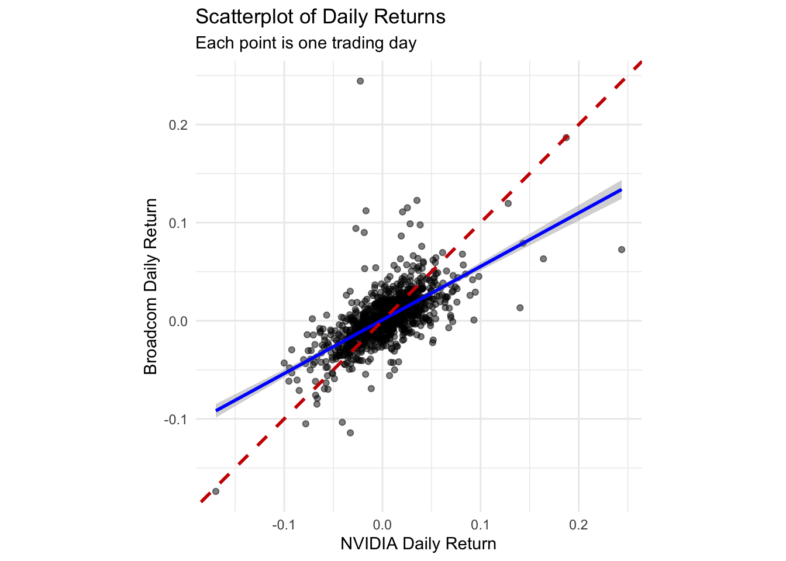
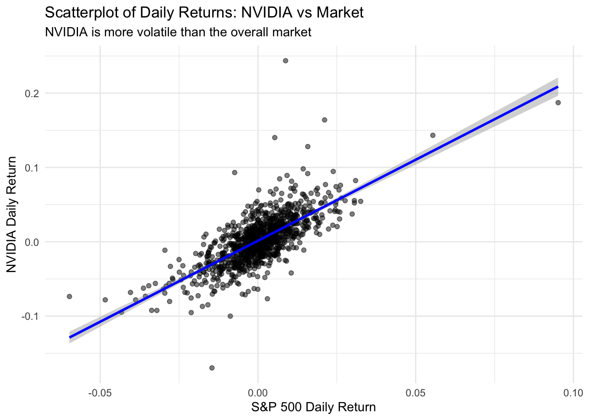
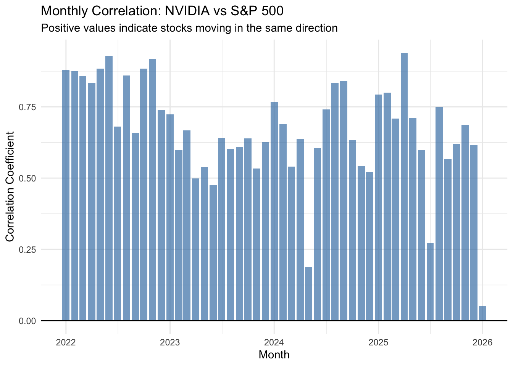

Code
library(tidyverse)
library(tidyquant)
theme_set(theme_minimal())Stock prices and returns are among the most commonly visualized time series data. In this chapter, we explore how to effectively visualize financial data, focusing on semiconductor stocks (NVIDIA and Broadcom) and the S&P 500 index.
Along the way, we’ll encounter several visualization challenges that arise when comparing assets with vastly different price scales.
library(tidyverse)
library(tidyquant)
theme_set(theme_minimal())We use the tidyquant package to retrieve historical stock prices. The data includes daily prices for NVIDIA (NVDA), Broadcom (AVGO), and the S&P 500 index (^GSPC) from January 2022 through January 2026.
# Load pre-downloaded stock data
stocks <- read_csv("data/stocks2022-26.csv")
# Quick look at the data structure
stocks %>%
group_by(symbol) %>%
summarize(
start_date = min(date),
end_date = max(date),
n_days = n(),
min_price = min(adjusted),
max_price = max(adjusted)
)# A tibble: 3 x 6
symbol start_date end_date n_days min_price max_price
<chr> <date> <date> <int> <dbl> <dbl>
1 AVGO 2022-01-03 2026-01-14 1012 40.5 412.
2 NVDA 2022-01-03 2026-01-14 1012 11.2 207.
3 ^GSPC 2022-01-03 2026-01-14 1012 3577. 6977.The data shows that we have daily adjusted closing prices for all three securities. Notice the enormous range in prices: the S&P 500 index ranges from around 3,500 to over 6,000, while individual stock prices vary from tens to hundreds of dollars.
A natural first instinct is to plot all three series on the same chart using different colors. Let’s see what happens:
stocks %>%
ggplot(aes(x = date, y = adjusted, color = symbol)) +
geom_line() +
labs(
title = "Stock Prices: NVIDIA, Broadcom, and S&P 500",
subtitle = "This chart is not very informative",
y = "Adjusted Price",
x = "Date",
color = "Symbol"
)
This chart is almost useless. The S&P 500 index values are so much larger than individual stock prices that NVIDIA and Broadcom appear as flat lines near zero. This is a common problem when visualizing financial data with different scales.
We can try separating the series into individual panels using facet_grid():
stocks %>%
ggplot(aes(x = date, y = adjusted, color = symbol)) +
geom_line() +
facet_grid(~ symbol) +
labs(
title = "Stock Prices by Symbol",
subtitle = "Faceted, but still using the same y-axis scale",
y = "Adjusted Price",
x = "Date"
) +
theme(legend.position = "none")
This is slightly better—we can now see the trends for each series—but the shared y-axis scale still compresses the individual stock charts. The S&P 500 panel dominates visually.
The solution is to allow each panel to have its own y-axis scale using scales = "free_y" in facet_wrap():
stocks %>%
ggplot(aes(x = date, y = adjusted, color = symbol)) +
geom_line() +
facet_wrap(~ symbol, scales = "free_y", ncol = 1) +
labs(
title = "Stock Prices by Symbol",
subtitle = "Each panel has its own y-axis scale",
y = "Adjusted Price",
x = "Date"
) +
theme(legend.position = "none")
Now we can clearly see the price movements for each security. NVIDIA shows dramatic growth (especially in 2023-2024), Broadcom shows steady appreciation, and the S&P 500 shows the broader market trend.
For comparing investment performance, returns (percentage changes) are often more meaningful than prices. Let’s calculate daily returns:
# Calculate daily returns for each stock
returns <- stocks %>%
group_by(symbol) %>%
tq_transmute(
select = adjusted,
mutate_fun = periodReturn,
period = "daily",
col_rename = "ret"
) %>%
ungroup() %>%
pivot_wider(names_from = symbol, values_from = ret) %>%
na.omit()
# Preview the returns data
head(returns)# A tibble: 6 x 4
date NVDA AVGO `^GSPC`
<date> <dbl> <dbl> <dbl>
1 2022-01-03 0 0 0
2 2022-01-04 -0.0276 0.0115 -0.000630
3 2022-01-05 -0.0576 -0.0416 -0.0194
4 2022-01-06 0.0208 -0.00928 -0.000964
5 2022-01-07 -0.0330 -0.0281 -0.00405
6 2022-01-10 0.00562 0.00325 -0.00144 Now we have daily percentage returns for each security, which allows for more meaningful comparisons.
A key question in portfolio management is: how correlated are different assets? If two stocks always move together, holding both provides little diversification benefit. If they move independently (or inversely), they can reduce portfolio risk.
Correlation, however, is not constant over time. We can calculate a rolling correlation to see how the relationship between two assets evolves:
# Calculate 30-day rolling correlation between NVIDIA and Broadcom
returns$roll_cor_NVDA_AVGO <- zoo::rollapply(
data = returns[, c("NVDA", "AVGO")],
width = 30,
FUN = function(x) cor(x[, 1], x[, 2]),
by.column = FALSE,
align = "right",
fill = NA
)
# Calculate 60-day rolling correlation between NVIDIA and S&P 500
returns$roll_cor_NVDA_SP500 <- zoo::rollapply(
data = returns[, c("NVDA", "^GSPC")],
width = 60,
FUN = function(x) cor(x[, 1], x[, 2]),
by.column = FALSE,
align = "right",
fill = NA
)Let’s start with a simple line chart of the rolling correlation:
returns %>%
filter(date >= "2022-04-01") %>%
ggplot(aes(x = date, y = roll_cor_NVDA_AVGO)) +
geom_line() +
labs(
title = "Rolling Correlation: NVIDIA vs Broadcom",
y = "Correlation Coefficient",
x = "Date"
)
This chart shows the data, but it’s not easy to interpret. We certainly do see that the returns don’t always move together, even though these two securities should be both influenced by information affecting the semiconductor sector.
In any case, we need reference lines and better formatting.
returns %>%
filter(date >= "2022-04-01") %>%
ggplot(aes(x = date, y = roll_cor_NVDA_AVGO)) +
geom_line(color = "steelblue", linewidth = 0.7) +
geom_hline(yintercept = mean(returns$roll_cor_NVDA_AVGO, na.rm = TRUE), linetype = "dashed", color = "red") +
scale_y_continuous(limits = c(-0.5, 1)) +
labs(
title = "Do semiconductor giants move together?",
subtitle = "30-Day Rolling Correlation of Daily Returns: NVIDIA vs Broadcom",
y = "Correlation Coefficient",
x = "Date"
)
This improved version adds several enhancements:
We can see that NVIDIA and Broadcom are generally positively correlated (they tend to move in the same direction), but the strength of this relationship varies considerably over time.
How does NVIDIA correlate with the overall stock market (S&P 500)?
returns %>%
filter(date >= "2022-04-01") %>%
ggplot(aes(x = date, y = roll_cor_NVDA_SP500)) +
geom_line(color = "steelblue", linewidth = 0.7) +
geom_hline(yintercept = 0, linetype = "solid", color = "black") +
scale_y_continuous(limits = c(-0.5, 1)) +
labs(
title = "Does NVIDIA move with the market?",
subtitle = "60-Day Rolling Correlation of Daily Returns: NVIDIA vs S&P 500",
y = "Correlation Coefficient",
x = "Date"
)
The correlation between NVIDIA and the S&P 500 is generally positive but fluctuates substantially perhaps due to company-specific news or sector-specific trends in AI and semiconductors.
Another way to visualize the relationship between assets is through scatterplots of their returns. Each point represents one trading day, with the x-axis showing one stock’s return and the y-axis showing another’s.
ggplot(returns, aes(x = NVDA, y = AVGO)) +
geom_point(alpha = 0.5, size = 1.5) +
geom_smooth(method = "lm", se = TRUE, color = "blue") +
geom_abline(intercept = 0, slope = 1, color = "red3", linetype = 2, linewidth = 1) +
labs(
title = "Scatterplot of Daily Returns",
subtitle = "Each point is one trading day",
x = "NVIDIA Daily Return",
y = "Broadcom Daily Return"
) +
coord_fixed()
The blue line shows the best linear fit between the two stocks’ returns. The dashed red line represents perfect correlation (slope = 1)—if both stocks always had identical returns, all points would fall on this line.
The positive slope confirms that the stocks tend to move together, but there’s substantial scatter around the line, indicating that the relationship is far from perfect.
ggplot(returns, aes(x = `^GSPC`, y = NVDA)) +
geom_point(alpha = 0.5, size = 1.5) +
geom_smooth(method = "lm", se = TRUE, color = "blue") +
labs(
title = "Scatterplot of Daily Returns: NVIDIA vs Market",
subtitle = "NVIDIA is more volatile than the overall market",
x = "S&P 500 Daily Return",
y = "NVIDIA Daily Return"
)
Notice that NVIDIA’s returns are much more spread out on the y-axis than the S&P 500’s returns on the x-axis. This reflects NVIDIA’s higher volatility—it experiences larger swings (both up and down) compared to the diversified market index.
We can also aggregate correlation by year to see how the relationship has changed:
returns %>%
mutate(year = year(date)) %>%
group_by(year) %>%
summarize(
correlation_NVDA_AVGO = cor(NVDA, AVGO),
correlation_NVDA_SP500 = cor(NVDA, `^GSPC`),
.groups = "drop"
) %>%
knitr::kable(
digits = 3,
col.names = c("Year", "NVDA-AVGO", "NVDA-S&P500"),
caption = "Yearly correlations between NVIDIA and other assets"
)| Year | NVDA-AVGO | NVDA-S&P500 |
|---|---|---|
| 2022 | 0.828 | 0.845 |
| 2023 | 0.532 | 0.553 |
| 2024 | 0.568 | 0.642 |
| 2025 | 0.727 | 0.740 |
| 2026 | 0.632 | 0.051 |
Finally, we can visualize monthly correlations as a bar chart:
returns %>%
mutate(ym = floor_date(date, "month")) %>%
group_by(ym) %>%
summarize(correlation = cor(NVDA, `^GSPC`), .groups = "drop") %>%
ggplot(aes(x = ym, y = correlation)) +
geom_col(fill = "steelblue", alpha = 0.7) +
geom_hline(yintercept = 0, color = "black") +
labs(
title = "Monthly Correlation: NVIDIA vs S&P 500",
subtitle = "Positive values indicate stocks moving in the same direction",
x = "Month",
y = "Correlation Coefficient"
)
This bar chart makes it easy to identify months when NVIDIA moved with the market (tall positive bars) versus months when it moved independently or inversely (short or negative bars).
Visualizing financial data effectively requires careful attention to scale differences and choosing the right metric for comparison:
Price charts can be misleading when comparing assets with different scales. Use facet_wrap() with scales = "free_y" to give each series its own axis.
Returns (percentage changes) are often more meaningful than prices for comparing investment performance.
Rolling correlations reveal how relationships between assets change over time—a static correlation coefficient can hide important dynamics.
Scatterplots of returns provide an intuitive view of how two assets relate, with the slope indicating the strength and direction of the relationship.
Aggregated correlations (yearly or monthly) can summarize trends while maintaining enough granularity to spot changes over time.